Menu
Menu
こもとは蕎麦屋を基本に、パスタやピッツァ、ご飯もの、カフェまで幅広くご用意しています。品数が多いため、ここではメニューの一例をご紹介します。季節や仕入れによって内容が変わることがあります。
メニュー表（PDF）を見る価格を含む全メニューはPDFでご覧いただけます。
高寺芯そば
こもとの看板

看板メニュー
「幻のお蕎麦」高寺芯そば
地蕎麦の実の中心部だけを挽いた粉で、つなぎを使わずに打った十割蕎麦。白く透き通った、香りとコシのあるお蕎麦です。
たれは、かつて営んでいたそば屋「みやま茶屋」創業以来の仕込みを受け継いでいます。
洋風創作そば
高寺芯そばをオリーブオイルやバジルソースで仕立てた、こもと独自の冷やがけそば。お店で人気の一品です。
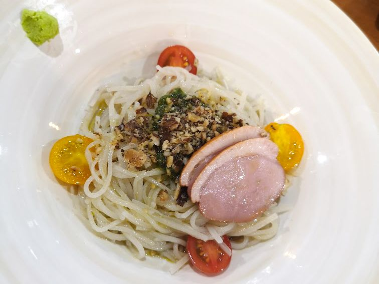
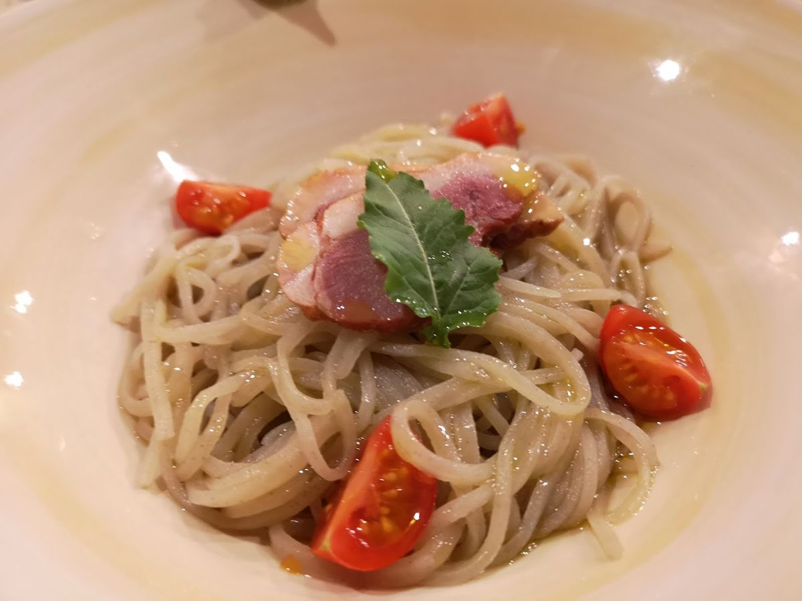
そのほかの蕎麦
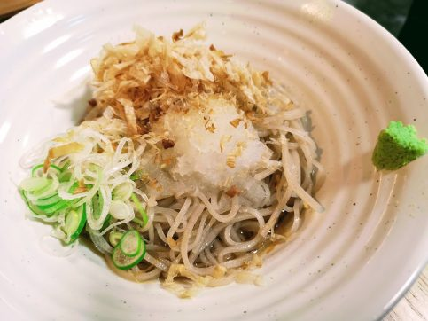
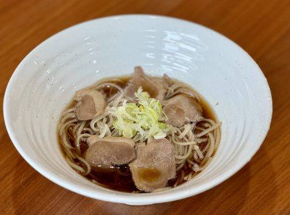
- ざる蕎麦
- 温かいかけ蕎麦 鴨肉添え
- 熱々出汁の冷たい鴨せいろ
トマトパスタ・生パスタ
国産小麦「セトデュール」の生パスタ

一番人気
自家素材トマトソースのパスタ
自家栽培のトマトで仕込むソースに、季節の野菜をたっぷり。こもとで一番人気のパスタです。
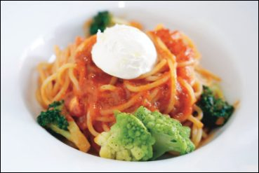
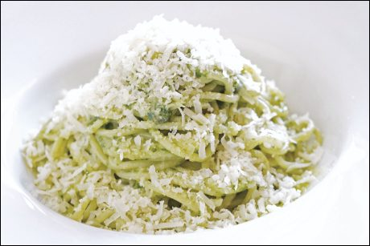
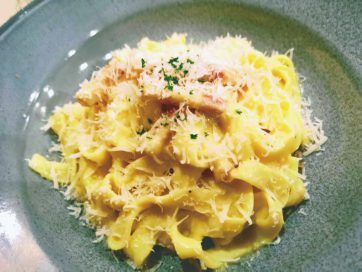
- ペペロンチーノ
- やまと豚のボロネーゼ
- 牡蠣のペペロンチーノ
- イワシとレモンのパスタ
ピッツァ
福島県産小麦「ゆきちから」の自家製生地

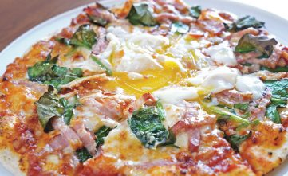
- 自家素材のトマトピッツァ
- 地元クルミのバジリコピッツァ
- やまと豚のラグーピッツァ
ご飯もの
自家製コシヒカリ使用
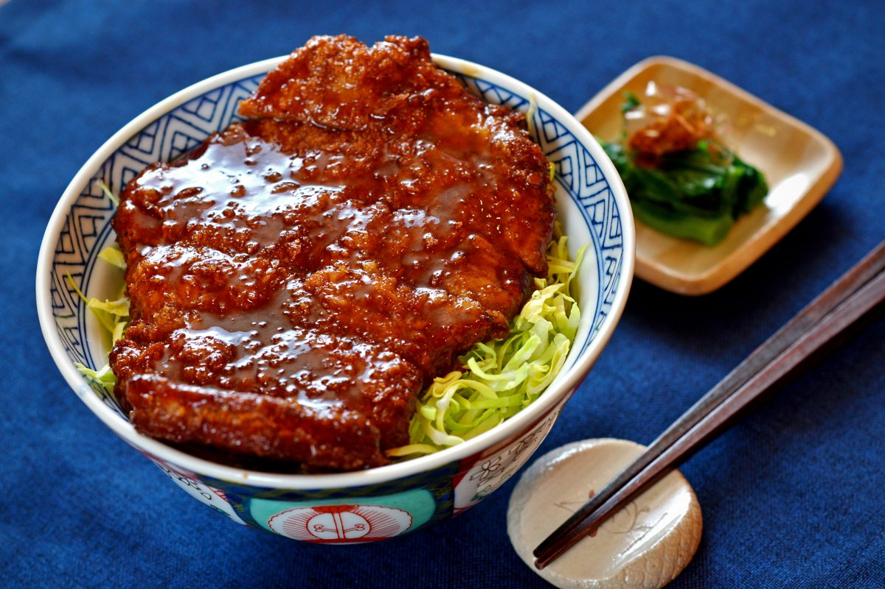
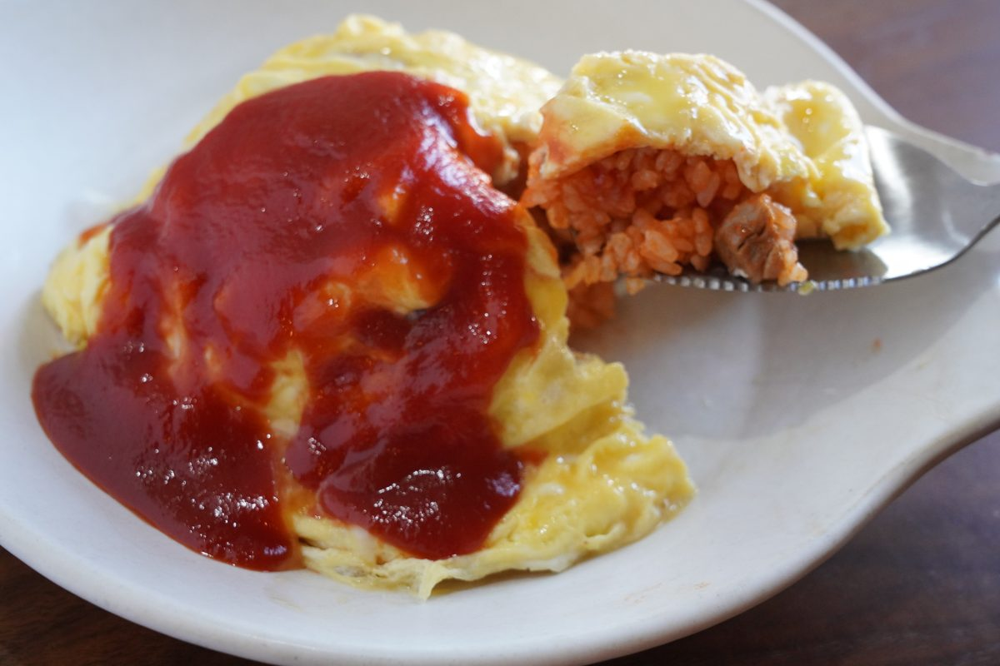
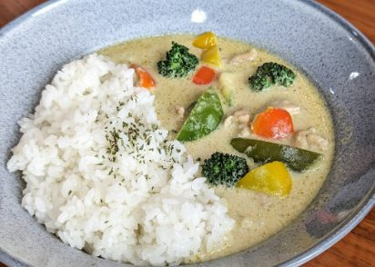
- 奥会津マッサマンカレー
- 馬肉カレー 栗添え
- やまと豚のラグー丼
一品料理
お酒のおともにも

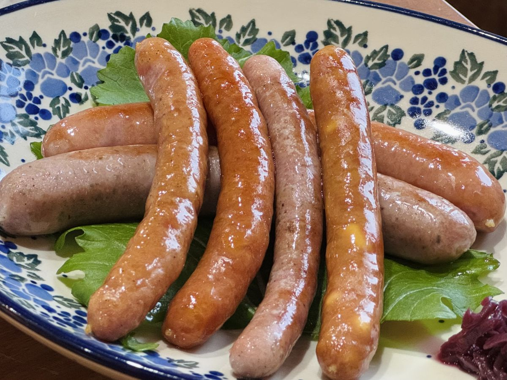
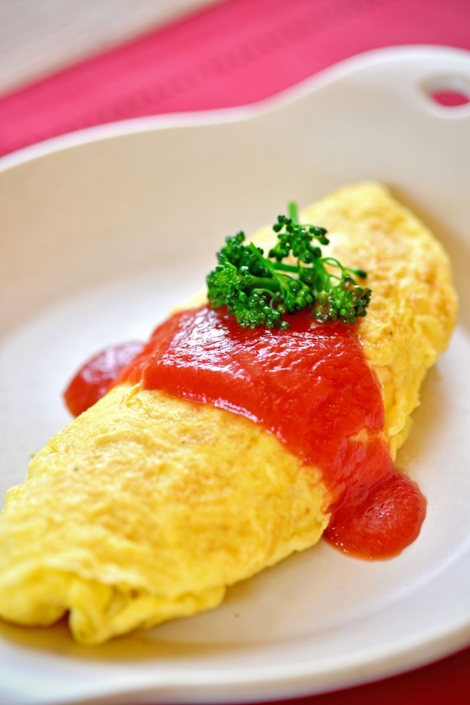
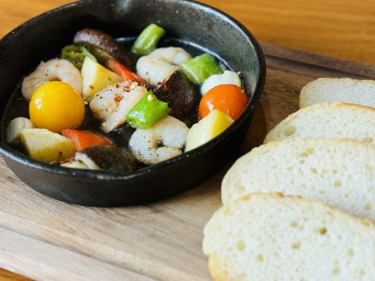
カフェ・スイーツ
おすすめ珈琲はスペシャルティコーヒーの生豆を自家焙煎。紅茶はガネッシュの「新茶の紅茶」。ミルクは地元の幻の牛乳「べこの乳」をあわせます。
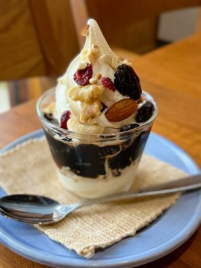
- 自家焙煎コーヒー
- カフェラテ
- 新茶の紅茶
- ロイヤルミルクティー
- 平飼い地鶏卵とべこの乳のぷりん
- ぷりんソフト